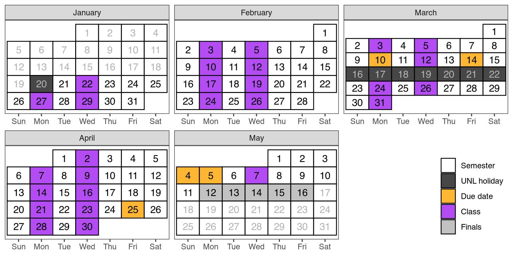

Stat 349 Syllabus
- Instructor
- Susan Vanderplas
- svanderplas2@nebraska.edu
- Office
- Hardin 343D
- Office Hours
By appointment. Schedule at https://calendly.com/vanderplas-stats/30min
- Time
- MW 10:00 - 11:15
- Location
- Hardin ANSC A228-East
- Course Website
- unl-statistics.github.io/stat349
- Final Exam
- May 8, 7:30-9:30 AM
Critical Information
Textbooks are free/open/online
- Open Technical Communication (OTC) by Tijerina, Powell, Arnett, Logan, and Race
- Entering the Conversation (ETC) ed. by Salmon
- Scientific Writing for Health Research (SWHR) by Karim, Jeong, and Yusuf
Policy Summary (Section 4):
- Communicate early and often (Section 4.2), especially if you’re having trouble with something. Include the right details (Section 4.2.1) when asking for help.
- Your grade: 10% Quizzes/Participation, 20% User Guide Project, 20% Business Report Project, 50% Homework (Section 4.1).
- Come to class, unless you’re sick (Section 4.3.1). You get one excuse-free absence.
- Weekly reading (and quiz) must be done before class. (Section 4.4)
- Keep up with the work as assigned to allow time for effective revision (Section 4.5).
- Up to two homework assignments may be resubmitted for regrading (Section 4.5.2).
- Do not plan to travel during Finals Week – you must be present for project presentations (Section 4.6).
- AI use must be disclosed, cited, with the full transcript and a diff between AI output and your submission. Be prepared to explain your thought process via oral exam (Section 4.7).
1 Tentative Schedule
This schedule is tentative and subject to change as the semester progresses. Students are expected to read the corresponding textbook chapter (linked on the course website) before coming to class. For the most part, for each week’s topic, there will be one or two corresponding textbook chapters.
| Week | Start | Topic | Due |
|---|---|---|---|
| 1 | 01-12 | Getting Started | |
| 2 | 01-19 | Communicating You! | |
| 3 | 01-26 | References | |
| 4 | 02-02 | Organizing Information | |
| 5 | 02-09 | Making an Argument | |
| 6 | 02-16 | Problem Statements & Data | |
| 7 | 02-23 | Methods & Procedures | User Guide Draft (02-27) |
| 8 | 03-02 | Charts, Tables, and Diagrams | User Guide (03-06) |
| 9 | 03-09 | Results | |
| 03-16 | Spring Break | ||
| 10 | 03-23 | Introductions and Conclusions | |
| 11 | 03-30 | Abstracts & Summaries | |
| 12 | 04-06 | Countering Logical Fallacies | |
| 13 | 04-13 | Reports and Presentations | Business Report Draft (04-17) |
| 14 | 04-20 | Editing and Revising Your Work | |
| 15 | 04-27 | In-Class Presentations | Business Report Presentations (04-27, 04-29) |
| Business Report (05-01) | |||
| 16 | 05-04 | Finals Week | Business Report Presentations (05-08) |
2 Course Description
Creation of research reports, business reports, and executive summaries. Presentation strategies, consequences of statistical modeling for real-world decision making, and countering common misconceptions and errors in statistical reasoning. Focus on real-world applications in research, business, and public service.
3 Course Objectives
At the end of this course, students should know how to:
- Write a statistical business report and give a presentation on a topic using appropriate information flow, graphics, and provided templates.
- Write a scientific article, using appropriate structure, graphics, citations.
- Document a data set and an analysis so that operations performed are reproducible and justified.
- Explain the consequences of statistical modeling decisions in an understandable and technically correct manner.
- Counter and preempt common misconceptions and errors in statistical reasoning in practical situations.
- Write a CV/cover letter.
4 Course Policies
4.1 Assessment/Grading
| Assignments | Weight |
|---|---|
| Reading Quizzes & Participation | 10% |
| User Guide/Documentation | 20% |
| Business Report & Presentation | 20% |
| Homework | 50% |
Lower bounds for grade cutoffs are shown in the following table. I will not “round up” grades at the end of the semester.
| Letter grade | X + | X | X - |
|---|---|---|---|
| A | 97.0 | 94.0 | 90.0 |
| B | 87.0 | 84.0 | 80.0 |
| C | 77.0 | 74.0 | 70.0 |
| D | 67.0 | 64.0 | 61.0 |
| F | <61.0 |
Interpretation of this table: A grade of 84.3 will receive a B. A grade of 77.6 will receive a C+. A grade of 73.9 will receive a C-. Anything below a 61 will receive an F.
4.2 Expectations
You can expect me to:
- reply to emails within 48 hours during the week (72 hours on weekends)
- be available in class to assist with assignments
- be available by appointment (office hours) for additional help or discussion
I expect you to:
- Be respectful and considerate of everyone in the class
- Engage in class discussions with civility and in good faith
- Complete the assigned reading, reading quiz, and any other activities before class
- Engage with the material and your classmates during class
- Seek help when you do not understand the material
- Communicate promptly if you anticipate that you will have trouble meeting deadlines or participating in a portion of the course.
- Do your own troubleshooting before contacting me for help (and mention things you’ve already tried when you do ask for help!)
Discussion and disagreement are important parts of the learning process, but it is important that mutual respect prevail. Individuals who detract from an atmosphere of civility and respect will be removed from the conversation and/or the classroom as applicable.
4.2.1 Technical Issues
If you have technical problems with Quarto, RStudio/Positron, or GitHub, send me an email with:
- any files necessary to replicate the issue
- a description of what you have tried, and
- a description of what you think should happen
- as much detail as possible:
- Text copied (CTRL-C) from error messages
- screenshots (not cell phone pics)
If you have problems with your computer, operating system, etc. that are not specific to this class, please consult ITS/HelpDesk first.
4.3 Attendance & Participation
All students are expected to attend and fully participate in class. Participation grades will be determined based on a combination of attendance checks and participation, including professionalism and engagement. Consistent, repeated failure to attend class or actively participate in the course will affect the participation portion of your grade.
One absence is allowed without any reduction in participation score - no excuse is necessary! Please do not email me when you use your one excuse-free absence.
The university requires me to hold class through the entire semester, which means that you are required to participate in class for the entire semester. Any non-university-excused travel you choose to do that results in missing class can, and probably will, affect your grade. This includes the final exam period - travel is not an excuse for failure to attend the final exam, if activities are planned for that period.
4.3.1 Illness
If you are feeling ill, please do not come to class. Instead, review the material and work on the homework assignment, and then schedule an appointment with me to meet virtually. In the appointment reason field on Calendly, indicate that this appointment is to substitute for your in-class participation on the date you missed.
If you need to miss more than 1-2 classes for illness, I reserve the right to require documentation from Disability Services or a medical provider in order to continue using this substitute for attendance grades.
4.3.2 Inclement Weather
If in-person classes are canceled, you will be notified of the instructional continuity plan for this class by Canvas Announcement. In most circumstances where there is power in the Lincoln area, we will hold class via Zoom if the university cancels class. You will be held to the same participation standards on Zoom as you are in person, and participation and attendance will be graded accordingly, with some allowance for disruption at the individual level where circumstances warrant.
4.4 Reading Quizzes
You will have weekly reading assignments which introduce the weekly focus area and provide different perspectives on the material. Some of these perspectives will be covered in class lectures and activities, but some will not be covered explicitly and are provided to expose you to different approaches and opinions.
Readings are linked on the course webpage for each week.
A weekly reading quiz on Canvas will be due before the first class of the week (10am on Mondays). This serves as a low-stakes grade-based reminder to do the weekly reading before class.
4.5 Homework
Weekly formative assignments (assignments meant to help you practice skills) will be given throughout the semester. The only way to learn the skills taught in this course is to practice - writing, citing, doing research, summarizing, and so on.
You will typically have one week to work on each of the assignments.
Assignments must be submitted in the file format specified, and should run or compile as submitted for credit to be given.
I will attempt to grade formative assignments within a week of the specified due date.
Formative assessments may be resubmitted for partial credit subject to the terms of the resubmission policy below.
It is critical to keep up with the work as assigned in this course. While it is possible to churn out a term paper in 4 hours of madness, the writing quality of said term paper will be sub-optimal at best. This course is designed to help you learn how to write and communicate effectively, which requires planning, thought, and revision. These steps are not compatible with last-minute fever-dream writing.
4.5.1 Late Work Policy
Late assignments will be accepted only under extenuating circumstances, and only if you have contacted me prior to the assignment due date and received permission to hand the assignment in late. I reserve the right not to grade (or to assign a 0 to) any assignments received after the assignment due date.
Logistics: Assignments are due at 6 pm on Fridays. There is a grace period of uncertain length between the assignment submission deadline and when I start grading the assignment - if it is submitted by the time I start grading, I don’t need to know it was late.
- Turned in at 6:05 pm on Friday, I start grading at 2 pm on Sunday \(\rightarrow\) fine. If you email me and alert me that your assignment was late by 5 minutes (or 12 hours), I may fill the 0 in for efficiency’s sake.
- Turned in at 9:30 am on Sunday, I graded everything Saturday afternoon \(\rightarrow\) 0 for the assignment (unless you have permission, etc.). Use the comment box on the Canvas assignment to request a “resubmission” to trigger the resubmission policy.
You may submit a homework assignment that was not submitted on time as a resubmission, if you submit it within one week of the assignment due date, assuming it meets the conditions below.
4.5.2 Resubmission Policy
Learning how to write is a process that requires an attempt and then subsequent improvement. Do not be afraid to make mistakes! I will allow you to re-submit two formative/homework assignments (one time each). You have a week from the time the assignment is returned to you to resubmit it for a regrade.
I am happy to provide feedback on revisions (after submission) without a grade update, subject to other constraints on my time.
Note: The resubmission policy does NOT apply to quizzes, projects, or exams.
This policy is subject to the following constraints:
You should resubmit assignments as soon as possible.
You may not resubmit an assignment for which solutions have been posted.
Each assignment should be resubmitted only once.
Resubmissions are due no later than 1 week after the assignment has been returned with comments. In addition,
- Resubmissions of assignments due before Spring Break are due at 6 pm the Friday before Spring Break (March 13, 2026)
- Resubmissions of assignments due after Spring Break must be submitted by Monday at 6 pm of week 15 of classes (April 27, 2026)
Resubmitted assignments will be graded at my convenience.
I spend the extra time grading resubmissions because it reinforces your learning; this policy is not designed to improve your grade in this class.
I reserve the right to adjust the resubmission policy over the course of the semester to ensure that it is meeting the objective of reinforcing your learning.
I reserve the right to limit or penalize resubmissions if it becomes clear that the current policy does not promote learning of the material and/or support the course objectives.
4.6 Projects
You will complete two major projects in this course: a business-style report and presentation, and a user guide for a software package or implementation decision relating to a specific topic. The business report will include a presentation and will be compiled over the second half of the semester. The user guide is due a week before Spring Break.
4.6.1 Late Projects
Writing is an iterative process that requires time - it’s good to write a draft and step away for a day before you revise it. As a result, projects in this course have been designed to encourage this iteration. You have at least 3 weeks to work on both projects outside of class.
With this in mind, late projects will not be accepted without evidence of severe, ongoing (>1 week) extenuating circumstances of a severity that must be documented with your adviser and student services. In addition, to access an accommodation for late project work, you must provide a GitHub commit history that shows ongoing engagement with the project before the circumstance occurred. This policy is intended to discourage you from waiting until the last minute to complete your projects, as this does not allow you the time to practice iterative writing and revisions and builds bad writing habits.
4.6.2 Project Presentation Attendance
DO NOT make travel plans that assume you will not have to attend the final exam period.
If there are too many projects to present during Week 15 of the course, we will continue with project presentations during the final exam period. All students must be present for project presentations, and failure to attend your peers’ presentations will result in a reduction of your project score and your participation score for the course.
4.7 Evaluation and Academic Integrity
Students are expected to adhere to guidelines concerning academic dishonesty outlined in Article III B.1 of the University’s Student Code of Conduct. The Statistics Department academic integrity and grade appeal policy is available here.
The policies detailed below are policies I have defined in addition to the university and departmental policies.
Summary: I can, at my discretion, give students an oral exam on their submitted assignment that can replace the graded assignment itself. That is, if you submitted it, you should be able to defend, discuss, and justify your work.
4.7.1 Evaluation Criteria
In every assignment, discussion, and written component of this class, you are expected to demonstrate that you are intellectually engaging with the material. I will evaluate you based on this engagement, which means that technically correct but low effort answers which do not demonstrate engagement or understanding will receive no credit.
When you answer questions in this class, your goal is to show that you either understand the material or are actively engaging with it. If you did not achieve this goal, then your answer is incomplete, regardless of whether or not it is technically correct. This is not to encourage you to add unnecessary complexity to your answer - simple, elegant solutions are always preferable to unwieldy, complex solutions that accomplish the same task.
Grammar and spelling are important, as is your ability to communicate technical information clearly in a written format; both of these criteria will be used in addition to assignment-specific rubrics to evaluate your work.
4.7.2 Code
You must be able to explain how the logic works for any code you turn in. This means that code you obtained from e.g. StackOverflow is fine to use if you can explain it and modify it for the purposes of this class, but if you cannot explain your code you will not get credit for the assignment. This is in line with what is generally considered acceptable behavior in programming - reuse is fine (subject to the code’s license) but you must be able to fully explain and modify any code you did not write yourself. You should also provide a link to the source of your code (or even the logic behind your code) - this is useful both for my information and for future you, in addition to being a good way to give attribution to the original author.
4.7.3 Writing
With the proliferation of AI large language models, I reserve the right to replace project and homework grades with grades based on an oral discussion of your submissions. If you cannot explain the logic behind your submission, how you came to the approach you used, and identify the tradeoffs behind decisions you made, then you will not receive credit. LLMs can be a useful tool, but this course’s objectives are meant to assess your ability to communicate statistical information to a target audience effectively, not your ability to use LLMs. Fundamentally, you need to understand concepts and develop written fluency in technical language and statistical concepts to communicate effectively; generative AI solutions may hamper both of these goals if you rely on them too much.
4.7.4 Generative AI
Technical writing is more clear and concise than other types of writing, and nuances are extremely important. To date, generative AI is not particularly good at these goals - it is wordy, sometimes uses odd phrasing, and (most importantly), as a predictive model, it cannot structure its output for human understanding. It may be useful to leverage AI tools to ensure that your work conforms to grammar and style guidelines, but I very highly discourage the use of generative AI to actually write content. I highly prefer your writing, even with some mistakes, to the bland content generated by most LLMs.
Any use of generative AI must be disclosed in an appendix to your submission - this includes brainstorming, editing, using AI as spell-check/grammar-check, and so on. You must document the following:
- the version of the generative AI used (e.g. Claude Sonnet 4.5, GPT 5.2, Copilot GPT-5 chat)
- the full sequence of prompts and responses
- any additional inputs you provided to the AI system (documents, images, etc.)
- a “diff” between the AI responses and your submission, showing exactly what was generated by the AI system and what you changed. If you are using quarto, you can use the
diffcommand line tool to get this (you may have to fix headers) after you’ve pasted the AI text into its own document.
5 Required University Information
See https://executivevc.unl.edu/academic-excellence/teaching-resources/course-policies.